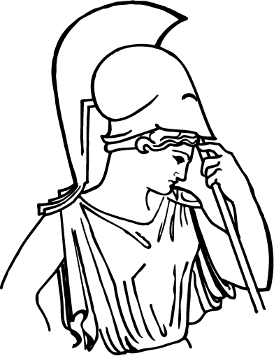

FFyLEl Mito de Cronos y la Devoración del Tiempo
Proyecto y adaptación lúdica por: Cristóbal Romero Díaz
En la Teogonía de Hesíodo, Cronos (Κρόνος), el más joven y temible de los titanes engendrados por Urano (el Cielo) y Gea (la Tierra), arrebató el gobierno del cosmos a su padre castrándolo con una hoz de pedernal. No obstante, advertido por sus progenitores de que estaba destinado a ser derrocado por uno de sus propios vástagos, Cronos tomó una medida atroz: conforme su esposa Rea daba a luz a sus hijos (Hestia, Deméter, Hera, Hades y Poseidón), él los devoraba vivos para mantener cautivo el curso del destino dentro de sus propias entrañas.
Esta adaptación lúdica para la consola de fantasía PICO-8 reinterpreta la clásica dinámica de persecución laberíntica bajo el prisma del mito hesiódico. El laberinto representa los corredores primordiales del tiempo cósmico, donde el titán ΚΡΟΝΟΣ (rotulado en caracteres del alfabeto griego clásico) recorre los pasillos devorando las simientes de las eras.
Sin embargo, las sombras del oráculo y la cólera de los espíritus divinos acechan sin descanso. Solo al consumir las Grandes Esferas Sagradas de la profecía, Cronos adquiere el vigor supremo para invertir la suerte y devorar a los espíritus que osan desafiar su trono de la Edad Dorada.
Usa las ← ↑ → ↓ (Flechas del teclado) para guiar a Cronos por los corredores del laberinto mitológico.
Z o C (Botón O): Iniciar partida / Pausa.
X o V (Botón X): Confirmar selección.
• Objetivo primordial: Consume todas las simientes doradas del tiempo para purificar el laberinto y avanzar de era.
• Las Grandes Esferas Oraculares: En los cuatro vértices del templo reposan oráculos ancestrales. Al devorarlos, los espíritus vengadores pierden su fuerza y pueden ser consumidos por Cronos durante un breve periodo.
• Vidas del Titán: Dispones de tres oportunidades antes de que la profecía de Urano se consume y el imperio caiga ante el advenimiento del nuevo orden.
Autor Original: UrbanMonk (2015)
Plataforma: PICO-8 BBS Cartridge
Publicación Original: Lexaloffle BBS - Cartridge #2098 ↗
Inspiración histórica: Homenaje al legendario Pac-Man (1980) creado por Toru Iwatani para Namco.
Autor de la modificación: Cristóbal Romero Díaz
Institución: Facultad de Filosofía y Letras (FFyL), UNAM
Adaptación: Caracteres en griego clásico, reinterpretación del mito de Cronos devorando el tiempo y presentación visual clásica.
Repositorio del proyecto: Código abierto y reproducible en GitHub.